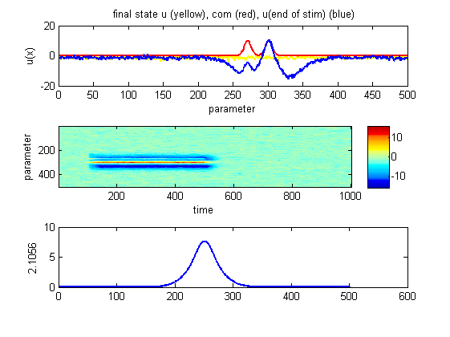
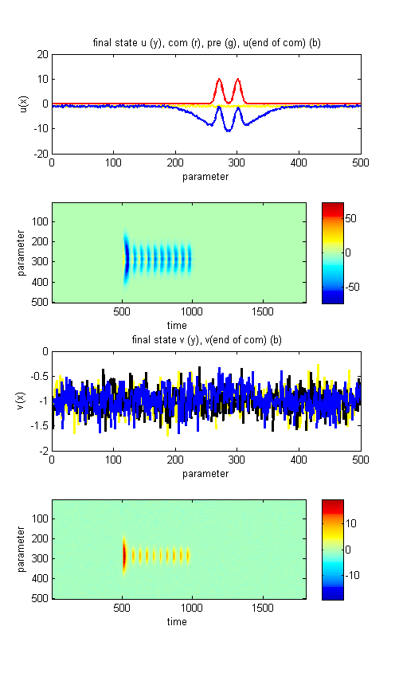
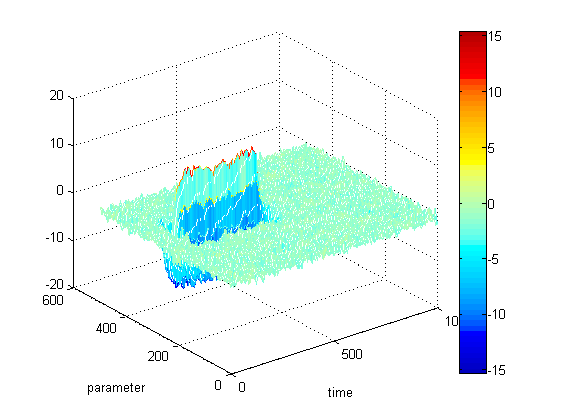

Plotting
Zur (bildlichen) Darstellung neuronaler Feldsimulationen bietet die DFT-Toolbox verschiedene Funktionen und Darstellungsweisen an.
Contents
Feld-Plot
Wird die Funktion plotField(field) mit einer field-Structure aufgerufen, erstellt sie die folgenden Abbildungen:
params = stdParams1L(); field = sim(params); plotField(field);
Die obere Abbildung zeigt das den Zustand des Feldes am Ende der Betrachtungszeit (gelb), die Form der Stimuli (rot) sowie die Aktivität zum Zeitpunkt command on.
Die mittlere Abbildung zeigt die Aktivität aller Einheiten (ordinate) über die gesamte Betrachtungszeit (abzisse). Die Aktivität der einzelnen Einheiten ist farblich kodiert (Farbcode im Feld rechts dargestellt).
Die untere Abbildung zeigt den Interaktionskernel.
Der Feld-Plot eines zwei-Schicht-Modells unterscheidet sich leicht vom ein-Schicht-Modell, da hier die oberen beiden Abbildungen für beide Schichten vorkommen:
params = stdParams2L(); field = sim(params); plotField(field);
Mesh-Plot
Die Funktion plotMesh(field) erlaubt es, das Feld als 3D-Mesh zu betrachten. Der Aufruf funktioniert analog zu plotField(field):
params = stdParams1L(); field = sim(params); plotMesh(field);
Hier werden für 2-Schicht-Modelle auch zwei Meshes angezeigt.
Fit-Plot
Für einige characteristischen Werte und Entscheidungen Wird die Neuronantwort durch eine bzw. zwei Gauss-Funktionen angenähert. Um diesen Plot für eine bestimmte field-Structure zu überprüfen kann die Funktion plotFit(field) verwendet werden. Auch ihr Aufruf erfolgt mit der field-Structure als Argument:
params = stdParams1L();
params.inp_diff = 50; % Zur Veranschaulichung besser geeignet
field = sim(params);
plotFit(field);
### square-Values ### oneGauss: 147.1025 twoGauss: 19.9362 Difference: 127.1663
Hier ist die Neuronantwort zum Zeitpunkt command on (analog zur blauen Kurve in plotField()) durch eine Gaussfunktion (grün) bzw. zwei Gauss-funktionen (rot) angenähert.
Die Funktion plotFit() gibt zusätzlich die Fehlerquadratwerte der beiden Fits sowie deren Differenz aus (zu sehen über der Grafik).
Siehe auch:
Einführung in die Simulationen
Funktionsreferenz der Funktionen zum Thema Plots